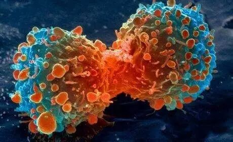

Time：19:30-21:30, Friday, June 2nd
Venue: Room A218, New Main Building, Beihang University.
Table topic: Ode to Joy
Toastmaster: Winston
Table Topics Master: Huanhuan
Last year Ode to Joy, which revolves around five young women living on the 22nd floor of Shanghai’s “Ode to Joy” high-rise community became the most popular TV series of the year. This year its sequel returns back powerfully. The reason why it gains favour is not only because its superior production but that it raises hit debate of some social topics such as “class solidification”.This Friday our table topic master Huanhuan prepares several questions on the background of Ode to Joy. Welcome to join the discussion. It makes no difference if you haven’t seen the TV series.
Prepared speech
Speaker 1: KiKi CC10－－
A Cancer is Destroying You

Cancer is one of the most deadly diseases in which abnormal cells divide without control. Nowadays there is a significant increase in the incidence of cancer because of severe polluted environment. Just think how many people suffer from cancer around you in the past ten years. So it's no exaggeration to say that a cancer is destroying you. What could we do? Come to listen to KiKi’s speech would be a wise choice.
Speaker 2: Bowen CC9－－
Regaining the Meaning of Reading
Reading plays an important part in the character development and personal growth. To open a book is always beneficial. Histories make men wise; poets witty; the mathematics subtile; natural philosophy deep; moral grave; logic and rhetoricable to contend. Do you like reading? Have you ever thought the meaning of reading? This Friday Bowen will share his experience about reading. Don't you want to see it?
Toastmasters International (TI) is a non-profit educational organization that operates clubs worldwide for the purpose of helping members improve their communication, public speaking, and leadership skills.You can find us by the following map of Beihang University.

https://mp.weixin.qq.com/s/eTKxWnsSjw2AKorvTzUhGw
本页为抢救式本地归档，图文已永久保存。